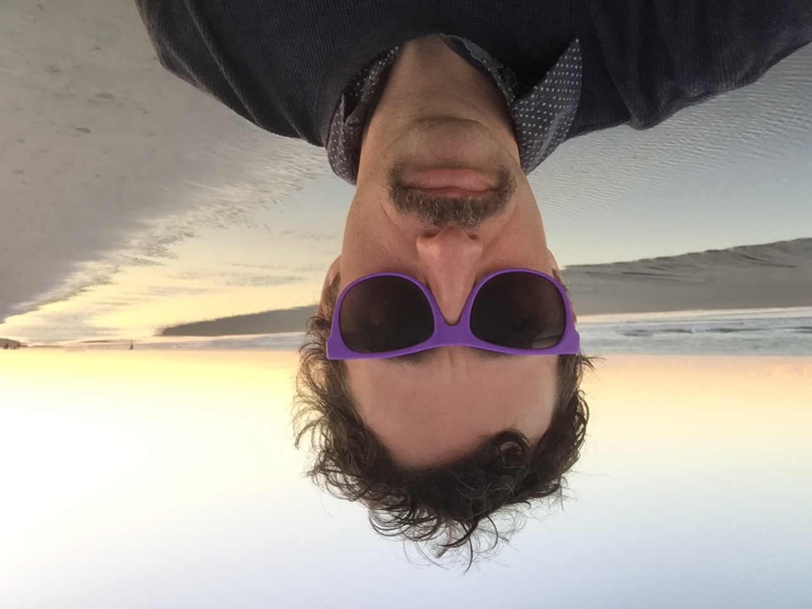

1. Consider the role of rhetoric, technology, and ethics in acts of making.
I think I did a good job of leveraging technology and tools that were new to me in creating something user-friendly and visually appealing. I’ve learned that it is crucial to understand how others perceive your work and to optimize designs based on feedback. I have also been able to apply my technical writing skills, specifically in the Good Design project, to convey a direct message. Rhetoric and word choice are extremely important in getting a point across - especially when explaining something visual that can’t always speak for itself.
2. Leverage Design Principles.
I definitely learned to take design risks while working on these assignments. I used a lot of tools I wasn’t, and am still not entirely, comfortable with. I learned what makes good design “good” and applied it to my own work. Through trial and error I managed to get some results I am pretty proud of.
3. Engage with others in a workshop environment.
I made sure to bring something to workshop every class (although I didn’t always submit it on time). I learned a lot from my peers. We helped each other learn how to use different applications, fix things that weren’t working, and gave each other overall inspiration on how we could make our designs better. It was a lot of fun seeing what my group would bring in each day and was ultimately super helpful to have people to troubleshoot my problems with.
4. Practice revision within and across media forms.
Revision is a critical part of the design process, and I made sure it was included in my personal process each time I made something new. Some projects required more revisions than others, like my Cartoon, but I always made sure to think about what principles I could apply to make my design better before submitting. The Logos project probably taught me the most about revision and really forced me to go through the process step-by-step.
5. Learn to present your work.
I made a good effort to incorporate the design principles we learned in class into my work. Most notably, I utilized contrast, alignment, and font choice. There is always room for more revision and application of skills, but I am proud of what I learned and how I managed to apply it in these projects.

generated by Pitt Fuego
“Why make a spark when you can light a fire?